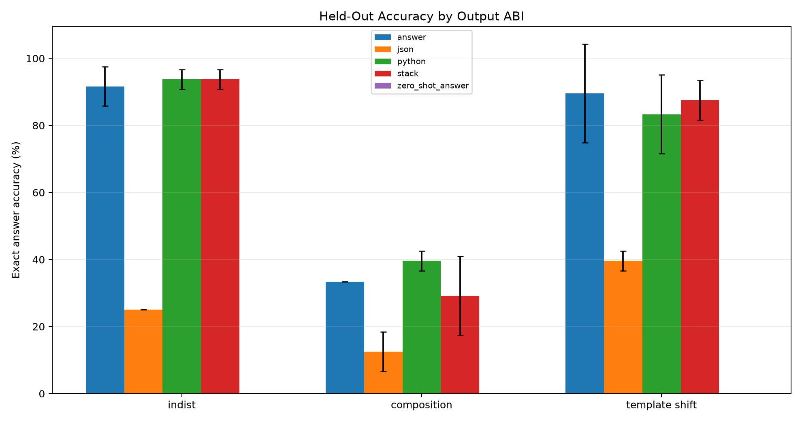
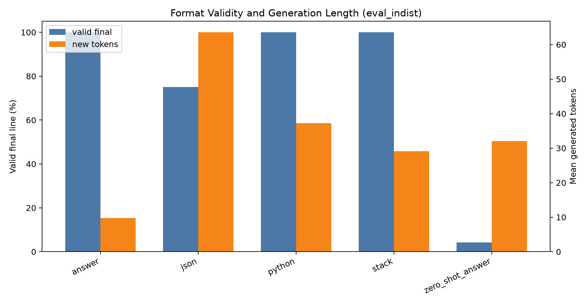
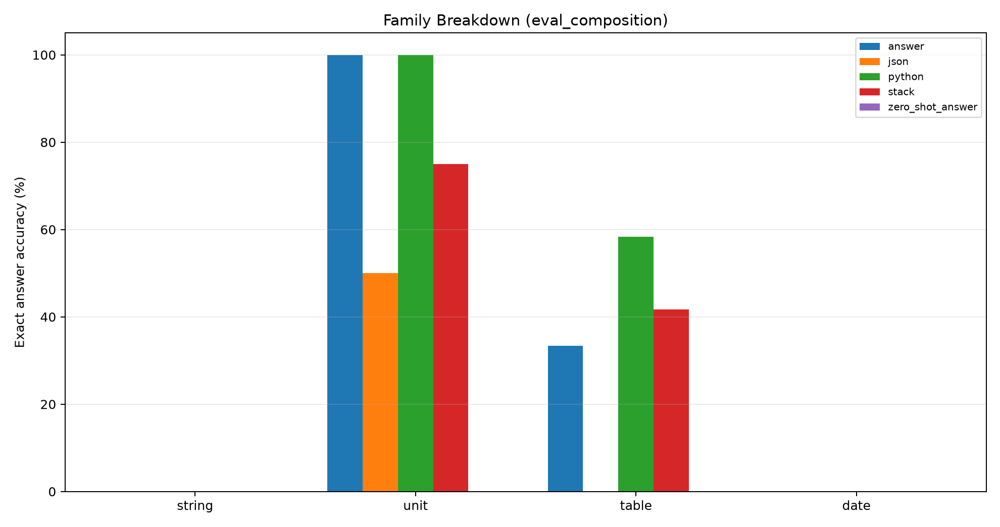
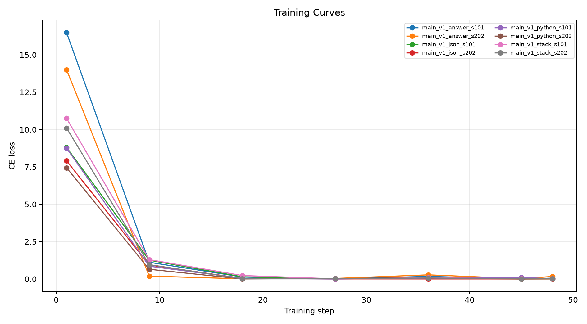

This experiment tests whether a local 4B language model learns practical deterministic procedures better when supervised with compact executable traces instead of final answers alone. The same generated tasks are rendered through four output ABIs: final-answer text, Python-like trace, JSON IR, and stack-style IR. Each trained arm uses the same QLoRA budget and is evaluated on fresh values, unseen operation compositions, and template-shifted prompts.
The task factory creates examples from four families: string normalization, unit conversion, lookup-table calculation, and date arithmetic. Every example has a deterministic answer and a gold procedural rendering for each ABI. Evaluation uses greedy generation and exact matching of the parsed `FINAL` value.
| suite | arm | split | runs | n_total | accuracy_mean | accuracy_std | valid_mean | tokens_mean |
|---|---|---|---|---|---|---|---|---|
| main | python | eval_composition | 2 | 48 | 39.6% | 2.9% | 100.0% | 44.60 |
| main | answer | eval_composition | 2 | 48 | 33.3% | 0.0% | 100.0% | 9.60 |
| main | stack | eval_composition | 2 | 48 | 29.2% | 11.8% | 100.0% | 31.94 |
| main | json | eval_composition | 2 | 48 | 12.5% | 5.9% | 68.8% | 63.88 |
| main | zero_shot_answer | eval_composition | 1 | 24 | 0.0% | 0.0% | 20.8% | 32.00 |
| main | python | eval_indist | 2 | 48 | 93.8% | 2.9% | 100.0% | 37.25 |
| main | stack | eval_indist | 2 | 48 | 93.8% | 2.9% | 100.0% | 29.08 |
| main | answer | eval_indist | 2 | 48 | 91.7% | 5.9% | 100.0% | 9.73 |
| main | json | eval_indist | 2 | 48 | 25.0% | 0.0% | 75.0% | 63.56 |
| main | zero_shot_answer | eval_indist | 1 | 24 | 0.0% | 0.0% | 4.2% | 32.00 |
| main | answer | eval_template_shift | 2 | 48 | 89.6% | 14.7% | 100.0% | 9.42 |
| main | stack | eval_template_shift | 2 | 48 | 87.5% | 5.9% | 100.0% | 28.71 |
| main | python | eval_template_shift | 2 | 48 | 83.3% | 11.8% | 100.0% | 37.35 |
| main | json | eval_template_shift | 2 | 48 | 39.6% | 2.9% | 72.9% | 62.83 |
| main | zero_shot_answer | eval_template_shift | 1 | 24 | 0.0% | 0.0% | 4.2% | 32.00 |




The composition gap for the best fresh-value arm is 54.2 percentage points. A small or negative gap would indicate that the learned representation transfers across operation combinations; a large positive gap indicates that the model mainly learned the easier in-distribution mapping.
On fresh values, the best trace ABI scored 93.8% and answer-only scored 91.7%. The shortest strong trace ABI used 29.1 generated tokens on average, while answer-only used 9.7. This is a weak trace advantage in accuracy and a large trace cost in tokens.
For the best unseen-composition arm, family accuracy was: string 0.0%, unit 100.0%, table 58.3%, date 0.0%. The composition failures are concentrated in families that require a new operation combination, while direct unit conversion remains easy.
The JSON ABI had an average valid-final rate of 72.2% across primary splits, showing that a verbose structured object can be harder to emit reliably than line-oriented formats.
This is a compact experiment. It is designed to reveal representation sensitivity and supervision effects, not to maximize absolute performance. The generated tasks are deterministic and intentionally narrow enough to allow controlled held-out splits. Larger task coverage and longer training would be needed before treating any ABI as a production recipe.